LESSON 04 · SYMMETRY & POINT GROUPS
分子对称性与点群
把“看起来对称”变成一套可运算的语言：识别对称操作、沿判定树确定点群，再把点群用于极性、手性、轨道成键与振动光谱。本章的落脚点是分子振动——用 Γ3N 把 3N 个运动自由度逐类拆开，最终判定每个正常振动在红外与 Raman 中的活性。
1. 为什么化学要研究对称性
分子对称性不是几何鉴赏，而是一种信息压缩工具。只要知道分子的点群，就能迅速排除不可能的偶极矩方向，判断分子是否可能具有手性，给原子轨道、配体群轨道和分子振动贴上对称性标签，并预测哪些轨道可以相互作用、哪些振动能出现在红外或 Raman 光谱中。点群不会直接给出能量数值，但它常能在计算之前先回答“允许还是禁止”。
所谓对称，是对物体执行某种操作后，它与操作前不可区分。这里“不变”不是所有原子都停在原位，而是同种原子可以互换，最后的核构型与原来完全重合。例如 NH₃ 绕穿过 N 和三角形中心的轴旋转 120°，三个 H 彼此换位，但整个分子仍不可区分，因此该转动是对称操作。
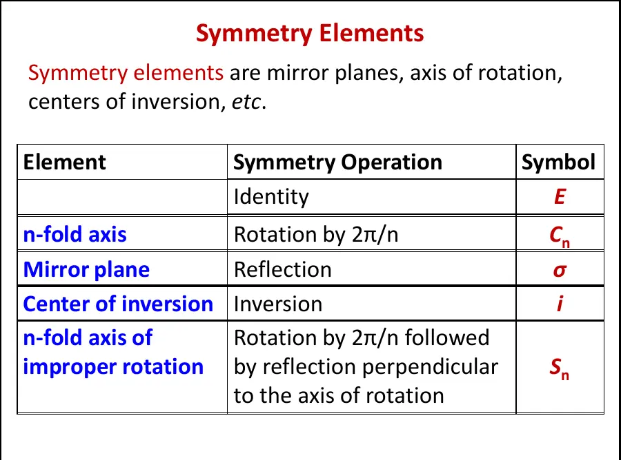
2. 对称元素与对称操作必须区分
对称元素（symmetry element）是操作所依赖的几何对象，如轴、平面或点；对称操作（symmetry operation）是绕轴旋转、关于平面反射等动作。C₃ 既常被用来简称三重旋转轴，也可表示旋转 120° 的操作，语境中应分清。例如“NH₃ 具有一根 C₃ 轴”说的是元素；“执行 C₃ 后 H₁→H₂”说的是操作。
一个点群包含的不是孤立图标，而是一组在复合下封闭的操作。例如 C₂v 的 E、C₂、σv(xz)、σ′v(yz) 中，连续执行两个镜面对称等价于执行 C₂。正是这种“操作之间可以相乘”的结构，使群论能以矩阵和特征标表处理化学问题。
3. 正旋转 Cn：先找最高阶主轴
若绕某轴旋转 360°/n 后分子不变，该轴为 n 重轴 Cn。同一根几何轴可能同时对应多个操作：一根 C₆ 轴还具有 C₆²=C₃、C₆³=C₂ 等操作。判定点群时以最高 n 的轴作为主轴，通常规定为 z 轴。
BF₃ 的分子平面法向是一根 C₃ 主轴；此外，平面内还有三根穿过 B 和一个 F 的 C₂ 轴。只找到 C₃ 还不能结束：这三根与主轴垂直的 C₂ 正是把它从 C 类推入 D 类的关键。NH₃ 同样有 C₃ 主轴，却没有与其垂直的 C₂，因此属于 C₃v 而非 D₃ 类。
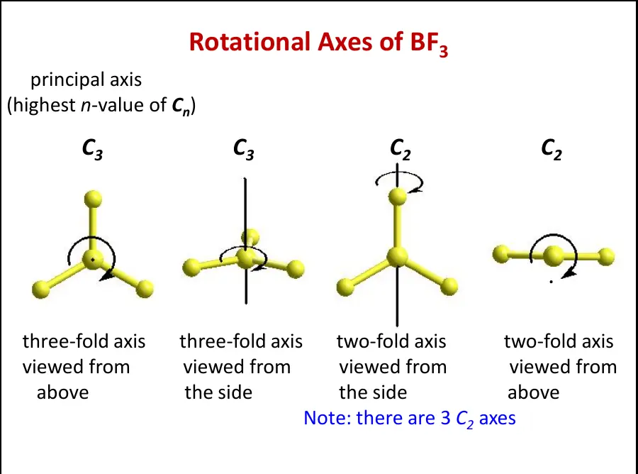
实用技巧
不要只盯着键。旋转轴可以穿过原子、键中点、面中心或整个多面体的中心。对平面正多边形，垂直于分子平面的轴通常是最高阶主轴；对配位多面体，要同时检查穿过相对顶点、相对边和相对面的方向。
4. 三种镜面：σh、σv 与 σd
镜面下标永远相对于主轴定义。σh（horizontal）垂直于主轴；σv（vertical）包含主轴；σd（dihedral）也包含主轴，但它还要平分两根相邻、垂直于主轴的 C₂ 轴之间的夹角。因此 σd 不是“斜着画的 σv”，而是依赖 D 类点群中那组 C₂ 轴关系的特殊垂直镜面。
水分子的 C₂ 主轴位于分子平面内并穿过 O、平分 H–O–H 角；分子平面和垂直于分子平面且包含 C₂ 的平面都是 σv。它没有 σh，因为垂直于 C₂ 的镜面会把 H 映到不存在的位置。BF₃ 的分子平面垂直于 C₃，故为 σh；三个包含 B–F 键与 C₃ 的平面是垂直镜面。
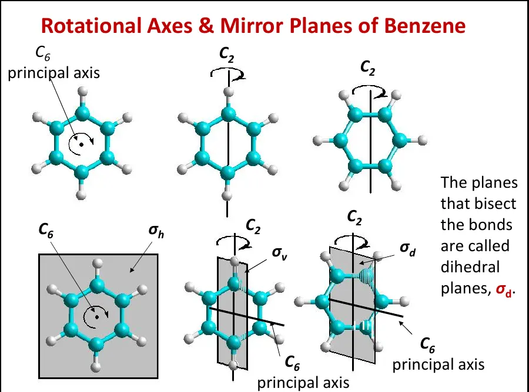
苯的 σd 到底是哪一个？
把 C₆ 作为竖直主轴。若把穿过一对相对 C 原子的三根平面内 C₂ 记作 C₂′，那么包含 C₆ 并穿过两条相对 C–C 键中点的三个平面平分相邻 C₂′ 轴之间的夹角，因此是 σd；包含相对 C 原子的三个平面则可记作 σv。教材若交换 C₂′/C₂″ 的命名约定，先看它是否“平分相邻垂直 C₂ 轴”即可，不要只背图。
5. 反演 i：穿过中心、距离相等、方向相反
反演把坐标 (x,y,z) 映为 (−x,−y,−z)。检查时，从任一原子向候选中心画直线，穿过中心后在相同距离处必须找到相同元素且处于等价环境。反演不是旋转 180°：C₂ 只改变垂直于轴的两个坐标，而 i 同时改变三个坐标。
线性同核双原子分子 N₂、O₂、H₂ 具有位于键中点的反演中心；CO、HCN 没有，因为反演会把不同元素互换。八面体 Cr(CO)₆ 具有位于 Cr 的反演中心，每个 CO 配体都映到反向配体。H₂O 没有 i；苯有 i，位于环中心。
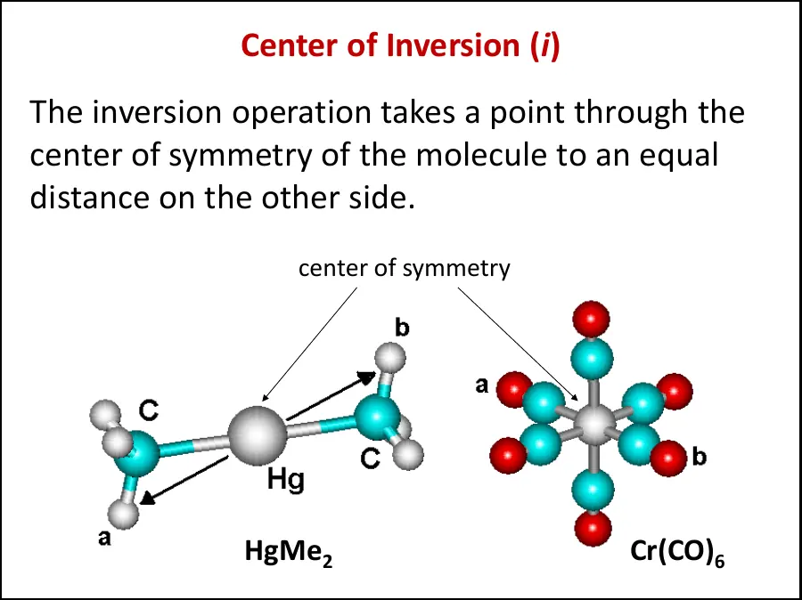
反演中心在光谱中有强烈后果：具有 i 的分子满足互斥规则，即同一正常振动不可能同时为 IR 和 Raman 活性。这并不意味着整个分子“没有 IR”或“没有 Raman”，而是同一个模式的两种活性互斥。
6. 非真旋转 Sn：为什么它补全了手性判据
Sn（improper rotation，旋转-反射）由两步组成：先绕轴转 360°/n，再关于垂直于该轴的平面反射。任何一步单独都不一定是对称操作，只要求两步复合后的结构与原来不可区分。S₄ 常见于某些扭曲四面体、平方反棱柱或配合物构象中。课件用 CPh₄ 展示 S₄ 群：它有一根 S₄ 轴，并同时具有 C₂，但没有独立的 σ 或 i。
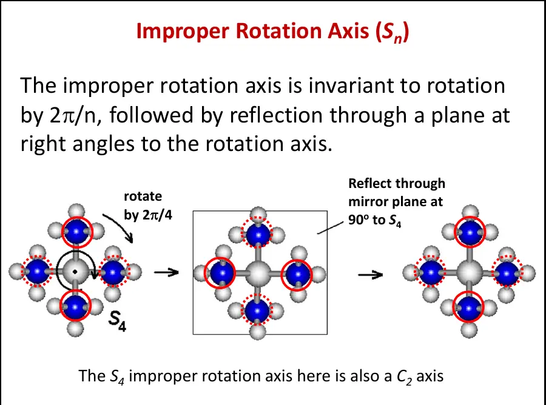
两个特殊关系必须记住：S₁ 等于 σ，因为旋转 360° 什么也没改变，只剩反射；S₂ 等于 i，因为先旋转 180°再关于垂直平面反射，最终三个坐标全部变号。由此得到最紧凑的手性判据：分子若含任意 Sn（包括作为 S₁ 的镜面和作为 S₂ 的反演中心），必不具有静态构型手性；反过来，缺少所有 Sn 才可能是手性的。
为什么 E、Cn、σ、i、Sn 足够？欧氏空间中保持距离的有限刚体变换可按行列式分为保持取向的正操作和反转取向的非正操作。固定一点的正操作可以表示为绕某轴旋转；非正操作可表示为一次旋转与垂直反射的复合，即 Sn。σ 与 i 又是其特殊情形，因此这套元素覆盖了有限分子的所有点对称操作。
7. C 类与 D 类点群：最关键的一处分流
C 与 D 的区别并不由镜面决定，也不取决于分子“像不像棱柱”。找到最高阶主轴 Cn 后，必须继续寻找与它垂直的 C₂ 轴：若不存在这样的一组 C₂，进入 C 类；若存在 n 根垂直 C₂，进入 D 类。这个判断永远先于 h、v、d 后缀。
C 类
以一根 Cn 主轴为核心，但没有 n 根垂直于主轴的 C₂。随后依据镜面分成 Cn、Cnv、Cnh。
D 类
具有一根 Cn 主轴和 n 根垂直 C₂。随后依据镜面分成 Dn、Dnh、Dnd。
7.1 Cn：只有主旋转轴的循环群
Cn 群的非平凡对称性只围绕一根 Cn 主轴展开，没有横向 C₂，也没有 σv 或 σh。例如 C₃ 群的操作为 E、C₃、C₃²；C₃² 表示沿同一轴再转一次 120°，即总计转 240°。这类分子常呈螺旋桨状：旋转能使各叶片互换，但任何反射都会改变其旋向。因为 Cn 只包含恒等与正旋转操作，所以 Cn 分子可能具有手性，也允许沿主轴方向存在永久偶极矩。
7.2 Cnv：主轴加 n 个垂直镜面
Cnv 具有一根 Cn 和 n 个包含主轴的 σv，但没有 n 根横向 C₂。H₂O 是 C₂v：有一根 C₂，分子平面和垂直分子平面的平分面都是 σv。NH₃ 是 C₃v：有一根 C₃ 和三个 N–H 所在的 σv，却没有三根横向 C₂。VOF₄ 的四方锥结构则是 C₄v。
这里最易误判的是 NH₃。虽然从 C₃ 方向看三个 H 呈正三角形，但绕任何横向轴转 180° 都不能使顶部 N 与 H 平面保持等价，因此它不是 D₃。Cnv 允许偶极矩沿主轴方向存在，所以 H₂O、NH₃ 均可为极性分子；但含镜面意味着它们不具有构型手性。
7.3 Cnh：主轴加水平镜面
Cnh 具有一根 Cn 和一个垂直于主轴的 σh，但仍然没有 n 根横向 C₂。Cn 与 σh 的复合通常还会生成 Sn 等操作，因此不能把点群理解成只含名称中直接写出的两个元素。例如 C₂h 的完整操作为 E、C₂、i、σh，其中 i=C₂σh。
判断时要警惕“看见 C₃ 和 σh 就写 C₃h”。BF₃ 虽然具有 C₃ 与分子平面 σh，但还存在三根平面内、垂直于 C₃ 的 C₂，因此应先归入 D₃，再写成 D₃h。Cnh 中的 σh 会使沿主轴的偶极矩反向，所以通常不允许永久偶极矩。
7.4 Dn：主轴外再有一圈横向二重轴
D 来自 dihedral。Dn 至少包含 Cn 主轴与 n 根垂直 C₂，但没有 σh 或 σd。以 D₃ 为例：若找到一根横向 C₂，再用主轴 C₃ 把它依次旋转 120°，便生成另外两根横向 C₂。[Co(en)₃]³⁺ 的理想构型属于 D₃，可形成 Δ 与 Λ 对映体；它没有任何 Sn、镜面或反演中心。
Dn 只含正旋转操作，因此也可能具有手性。但所有 D 类都不允许永久偶极矩：若偶极沿主轴，一根横向 C₂ 会把它翻转；若偶极垂直主轴，Cn 又会改变它的方向。只有零矢量才能在全部 Dn 操作下保持不变。
7.5 Dnh：D 骨架加水平镜面
Dnh 具有 Cn、n 根横向 C₂ 和 σh。BF₃ 为 D₃h，苯为 D₆h，XeF₄ 为 D₄h，CO₂ 为 D∞h。σh 与已有旋转操作组合后，群中通常还会出现 σv、σd、i 或 Sn；具体是否含 i 与 n 的奇偶和几何有关，不能只凭后缀 h 一概而论。
BF₃：为什么不是 C₃h？
第一步找 C₃；第二步不要急着看镜面，而是找横向 C₂。BF₃ 分子平面内有三根穿过 B 与某个 F 的 C₂，于是先确定 D₃。第三步发现分子平面垂直于 C₃，是 σh，最终得到 D₃h。
苯：为什么是 D₆h？
环面法向为 C₆；平面内有六根垂直于 C₆ 的 C₂，先得到 D₆；环平面为 σh，所以是 D₆h。苯还具有 i、σv、σd 和多种 Sn，但这些是完整群结构的一部分，不必逐一写进点群名称。
7.6 Dnd：没有 σh，改由 σd 平分横向 C₂
Dnd 具有 Dn 的主轴和横向 C₂，但没有 σh；它具有 n 个包含主轴并平分相邻横向 C₂ 夹角的 σd。交错乙烷为 D₃d，交错二茂铁为 D₅d，平方反棱柱 [ZrF₈]⁴⁻ 为 D₄d，allene 的理想结构为 D₂d。
σd 不能仅凭“平面是斜的”判断。它必须同时满足两点：包含主轴，并平分两根相邻横向 C₂ 的夹角。交错乙烷和重叠乙烷都有 C₃ 与三根横向 C₂；重叠式有 σh，所以是 D₃h；交错式没有 σh，但有三个 σd，所以是 D₃d。
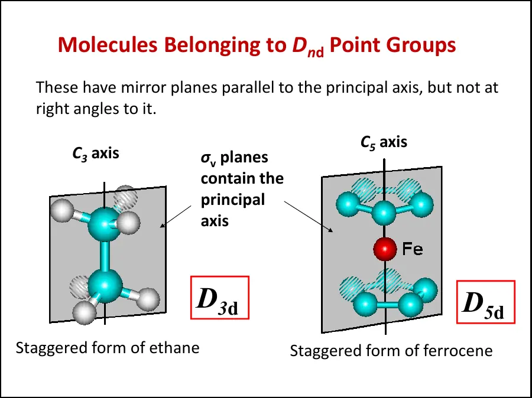
7.7 C/D 家族对照表
一行判定口诀
先找 Cn，再问有无 nC₂⊥：无则 C，有则 D；最后才看镜面。C 系有 σv → Cnv，有 σh → Cnh；D 系有 σh → Dnh，无 σh而有 σd → Dnd。
8. 特殊点群：C₁、Cs、Ci 与高对称群
C₁ 只有恒等操作 E，是最低对称性；一个四面体碳连四种不同取代基时通常为 C₁。Cs 除 E 外只有一个镜面；平面但不具任何旋转轴或反演中心的低对称分子常落入 Cs。Ci 只有 E 和 i，虽不常见但概念上重要。判定树若找不到高阶轴，最后就要检查这三类。
另一端是立方类高对称点群：正四面体为 Td，正八面体或立方体为 Oh，正二十面体或正十二面体为 Ih。它们具有多根等价高阶轴，没有唯一主轴，必须在判定树前部单独识别。CH₄ 属 Td，SF₆ 属 Oh，C₆₀ 近似 Ih。
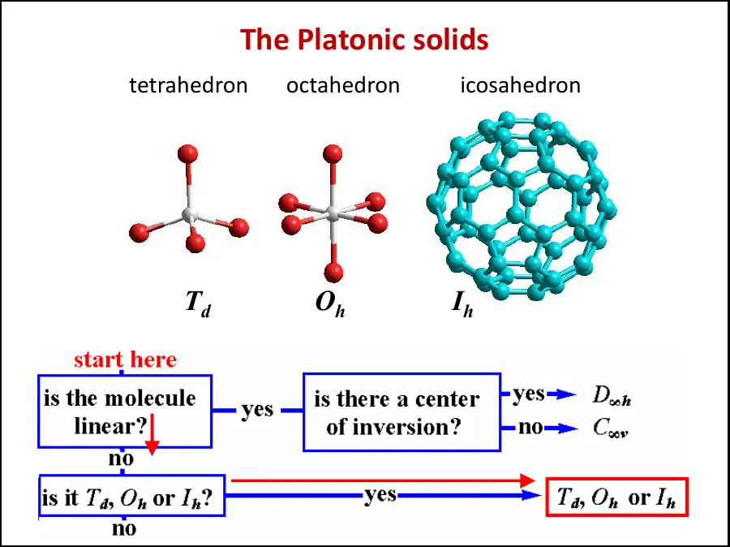
9. 线性分子：C∞v 与 D∞h
任何理想线性分子都具有沿分子轴的 C∞。若还有反演中心，则属于 D∞h；若没有反演中心，则属于 C∞v。同核双原子分子 N₂、O₂、F₂、H₂ 以及中心对称的 CO₂ 属 D∞h；异核双原子 CO、HI 以及 HCN 属 C∞v。
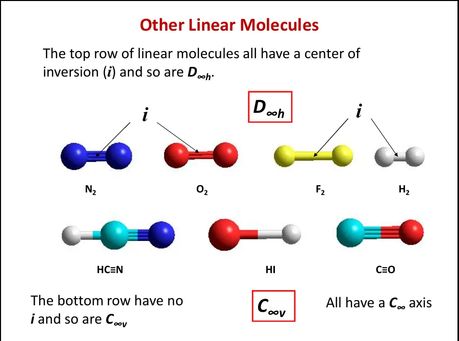
这里的“∞”表示绕分子轴转任意角度都不改变核排布。D∞h 还具有无穷多根垂直 C₂、一个 σh 和无穷多个包含分子轴的镜面；C∞v 没有垂直 C₂ 和 i，但保留无穷多个 σv。在振动自由度计数中，线性分子只有两个独立转动自由度，因此正常振动数为 3N−5，而非线性分子为 3N−6。
10. 一棵能实际使用的点群判定树
- 分子是否线性？
是：检查 i，分别归 D∞h 或 C∞v；否：继续。
- 是否为 T、O、I 类高对称多面体？
识别正四面体、正八面体/立方体、正二十面体类结构及其带 h、d 的具体群。
- 是否存在 Cn 主轴？
没有：检查 i 或 σ，得到 Ci、Cs；两者都无则 C₁。
- 是否有 n 根垂直于主轴的 C₂？
有则进入 D 系；没有则进入 C 系。
- D 系如何加后缀？
有 σh → Dnh；无 σh但有 σd → Dnd；都无 → Dn。
- C 系如何加后缀？
有 σh → Cnh；有包含主轴的 σv → Cnv；都无 → Cn。若主要元素是 S2n，归入 S2n。
判定顺序为什么不能颠倒
σh 与 σv 不能共存于同一根主轴，所以先问 σh 不会丢失信息；相反，若先问 σv 就可能把 Cnh 误判。同理，横向 C₂ 必须先于镜面检查，否则 BF₃ 会被错写成 C₃h。判定树中每一步的位置都是为了让后面的问题更少、更明确。
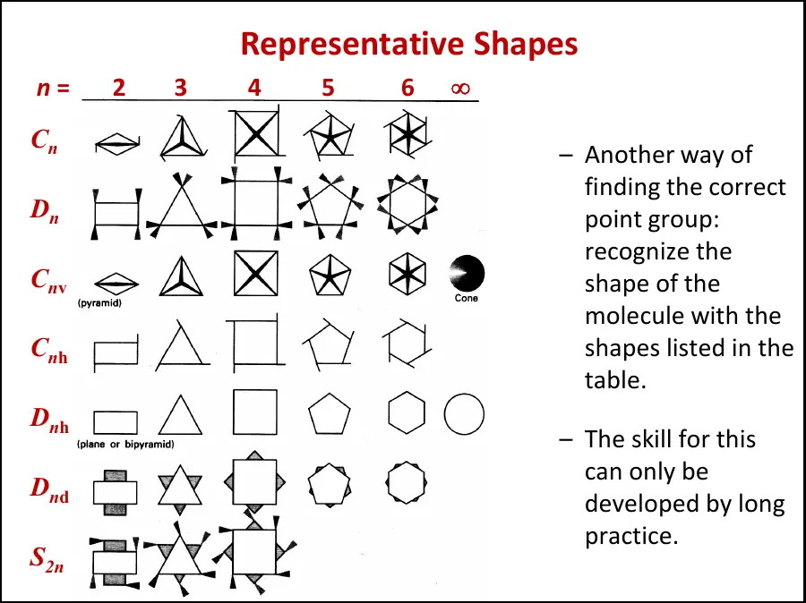
11. 高频分子逐个判定
下表可作为速查，但每一行都应该能在纸上写出理由。判定的标准流程是五栏检查：主轴 Cn、垂直 C₂、σh/σv/σd、i、Sn。五栏填完，点群名称自然浮现，不需要凭记忆对图。
非线性；一根 C₂；无垂直 C₂；有两个包含主轴的 σv，无 σh。
一根 C₃；无三根垂直 C₂；三个 N–H 平面都是 σv。
C₃ 主轴 + 三根垂直 C₂，先判 D₃；分子平面是 σh，故 D₃h。
C₆ 主轴 + 六根平面内 C₂；分子平面为 σh，另有 σv、σd 与 i。
C₃ 主轴 + 三根垂直 C₂；无 σh，但有三个 σd 和 i。
C₃ 主轴 + 三根垂直 C₂；垂直于 C₃ 且位于两组 H 中间的平面为 σh。
平面正方形：C₄ + 四根垂直 C₂ + 分子平面 σh，中心 Xe 处有 i。
跷跷板形：保留一根 C₂ 和两个 σv，孤对电子破坏更高对称性。
正四面体，具有多根 C₃ 和 C₂，没有唯一主轴；不要误判为 D₂d。
正八面体，具有三根 C₄、四根 C₃，并有反演中心。
四苯基甲烷的理想构型：一根 S₄ 轴与一根 C₂，没有 σ 或 i。
线性且有反演中心；O=C=O 两端等价反向。
观察这张表可以发现一条规律：凡是有孤对电子、取代基不等价或配位几何不规则的分子，对称性都会显著下降。SF₄ 从理想的正四面体（Td）降到 C₂v，正是因为孤对电子占据了原本可以配平的位置；H₂O 从预期直线形降到弯曲的 C₂v，也是同样的原因。反过来，当所有配体等价、几何规则时，分子往往获得高对称点群。这一直觉在遇到陌生分子时很有用：先假设最高对称的可能构型，再看哪些取代或孤对打破了它，就知道该降到哪一层。
这也解释了为什么同一种中心原子可以对应多个点群：硫可以是 SF₆（Oh）、SF₄（C₂v）、SO₃（D₃h）、SO₂（C₂v）、H₂S（C₂v），每一个都由实际的配位数和孤对数目决定。点群在此扮演的是结果而非原因的角色——它忠实地记录了几何，因此不能反过来用它去推测电子结构，只能用它去检验推测是否自洽。
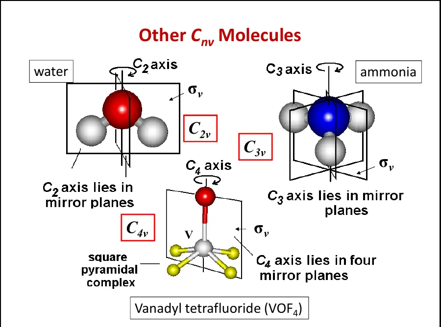
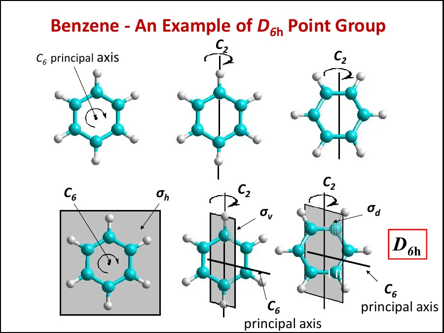
12. 群的四条规则与“为什么叫群”
一组对称操作必须满足四条群公理。第一，含恒等元 E，使 EA=AE=A；第二，每个操作 A 有逆操作 A⁻¹，使 AA⁻¹=E；第三，任意两个群内操作的复合仍属于该群，即封闭性；第四，复合满足结合律 A(BC)=(AB)C。操作通常不满足交换律，因此 AB 不一定等于 BA。
以 C₂v 为例，C₂²=E，每个镜面反射两次也回到 E；σv(xz)σv(yz)=C₂。把操作写成作用于坐标的矩阵后，群乘法就变成矩阵乘法。例如 C₂(z) 的矩阵为 diag(−1,−1,1)，σ(xz) 为 diag(1,−1,1)，σ(yz) 为 diag(−1,1,1)。这些矩阵的迹就是特征标。
四条公理可以用 C₂v 的具体操作逐条验证：E 就是那个“什么都不做”的矩阵；C₂ 的逆是它自己，因为连续两次 180° 旋转回到原状；两个 σv 相乘给出 C₂，仍在群内；结合律对矩阵乘法自动成立。把这几步写在纸上，比死记定义更能建立“群是一组自洽操作”的感觉。
13. 特征标表：结构、约定与读表要点
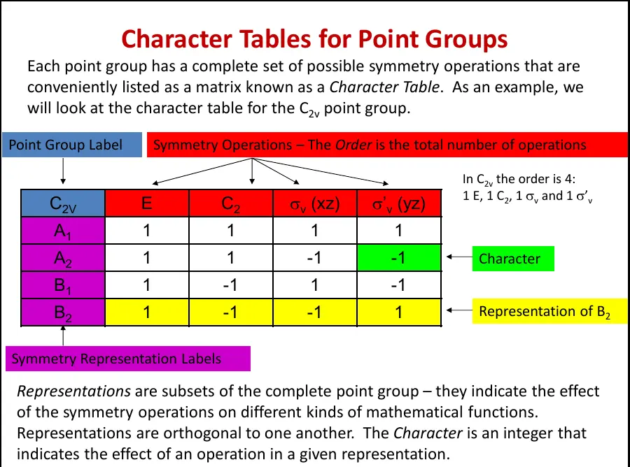
表头 E、C₂、σv(xz)、σ′v(yz) 是操作类；A₁、A₂、B₁、B₂ 是不可约表示。A 或 B 表示一维表示，E 表示二维简并，T 表示三维简并。对一维表示，字符 +1 表示基函数经该操作不变，−1 表示变号，0 表示更复杂的变化（例如二维表示中两个分量混合）。A 对主轴旋转对称，B 对主轴旋转反对称；下标 1/2 再按垂直 C₂ 或指定 σv 的对称性区分。
13.1 表头与左侧标签
特征标表本质上是一个方阵：横行数等于操作类数，也等于不可约表示数。表头第一行按类列出操作，并在每类前写出该类包含的操作个数（如 2C₃、3σv），这个数字是后面约化公式中的类权重 gR，不能漏掉。左侧第一列是不可约表示的 Mulliken 符号。
13.2 右侧的基函数栏
右侧的 x、y、z 对应平移与偶极矩分量，Rx、Ry、Rz 对应转动，x²、y²、z²、xy、xz、yz 对应极化率张量分量。以课件坐标约定为例，z 属 A₁，x 属 B₁，y 属 B₂，Rz 属 A₂。坐标轴若重新命名，B₁/B₂ 可能交换，所以做题必须先固定 z 为主轴及分子所在平面。
特征标 0 不是“没有作用”
二维或更高维基函数经操作后可能彼此混合，矩阵迹恰好为 0。例如 C₃v 的二维 E 表示中，(x,y) 在 C₃ 下互相线性组合，字符为 2cos120°=−1；在 σv 下一个分量不变、另一个变号，迹为 0。
13.3 特征标表的七条性质
这些性质既用于查表，也用于自我检查：
13.4 符号命名规则速查
E 这个字母有两种完全不同的用法：作为操作，它表示恒等；作为表示符号，它表示二维简并。同一张表里两者同时出现，只能靠所在位置判断——表头行里的 E 是操作，左侧第一列里的 E 是表示。
13.5 怎样“读”一张没见过的高阶点群表
面对 D4h、Oh、Ih 这类大表，不要逐格背诵，而应按以下顺序建立理解：
- 先数群阶 h。
把表头每类前的操作数相加。D4h 为 1+2+1+2+2+1+2+1+2+2 = 16；Oh 为 48。群阶决定了归一化因子。
- 再定位全对称表示。
字符全为 +1 的那一行就是全对称表示，D4h 中是 A1g，Oh 中是 A1g。它永远存在，是校对的锚点。
- 然后找 g/u 配对。
含 i 的群中，g 和 u 表示的字符除 i 列及非真操作列外形状相同，成对出现。D4h 有 A1g/A1u、A2g/A2u、B1g/B1u、B2g/B2u、Eg/Eu 五对，共 10 个表示，与 10 个操作类对应。
- 最后看基函数栏定位用途。
要找 d 轨道就查 x²−y²、z²、xy、xz、yz；要找平移就查 x、y、z；要找转动就查 Rx、Ry、Rz。这一栏直接给出分子的轨道标签、偶极矩方向和 Raman 活性。
用 D4h 表分析 XeF₄
XeF₄ 为平面正方形，属 D4h。它的四根 σ 键给出 Γσ，约化后为 A1g+B1g+Eu。查表：A1g 只有二次函数（x²+y²、z²），无 x/y/z，故对 σ 成键而言只能与 s、dz²、dx²−y² 组合；Eu 含 (x,y)，对应 px、py。因此 XeF₄ 的 σ 骨架在对称性上要求中心原子使用 s、两个 d 和两个 p，这正是超价分子常被讨论的 sp²d² 或 sd²p² 描述。但同样要注意：对称性允许不代表 d 轨道能量上真能有效参与，Xe 的 5d 与 5p 能量差很大，实际成键主要靠 p 轨道与三中心四电子模型解释。
14. 可约表示怎样分解
把一组键、轨道或 3N 个笛卡尔位移作为基，可以得到可约表示 Γ。其字符通常通过“操作后仍留在原位置的基函数贡献相加”求得；被移到另一位置的基函数对迹贡献为 0，留在原位但变号的贡献为 −1。随后用约化公式计算每个不可约表示出现次数：
点群的阶等于全部操作数；不可约表示数等于操作类数；各不可约表示维数平方之和等于群阶。不同不可约表示的字符向量在按类大小加权的内积下正交。这些性质既是计算工具，也是查表时的错误检查。
C₂v 的坐标表示
三维坐标 (x,y,z) 对 E、C₂、σ(xz)、σ(yz) 的字符为 (3,−1,1,1)。分解得到 A₁+B₁+B₂，正好对应 z、x、y；没有 A₂，因为普通极矢量的三个分量都不按 Rz 的方式变换。
D₃h 中 Γσ 的完整约化
BF₃ 的三根 σ 键给出 Γσ=(3,0,1,3,0,1)（列序 E、2C₃、3C₂、σh、2S₃、3σv）。D₃h 的群阶 h=12。以 A₁′ 为例：
a(A₁′) = 1/12 × [1·3·1 + 2·0·1 + 3·1·1 + 1·3·1 + 2·0·1 + 3·1·1] = 12/12 = 1
以 E′ 为例：a(E′) = 1/12 × [1·3·2 + 2·0·(−1) + 3·1·0 + 1·3·2 + 2·0·(−1) + 3·1·0] = 12/12 = 1。其余表示经同样计算均为 0，所以 Γσ=A₁′+E′。注意第二个因子里每个字符都要乘以该类操作数（2 或 3），这是初学者最常漏的一步。
14.1 约化的三步检查法
手工约化容易出现两类错误：漏乘类权重，以及算完后不核对总数。建议每做一题都执行以下三步检查：
- 核对维数总和。
所得各不可约表示的维数乘以其出现次数之和，必须等于原可约表示在 E 下的字符。例如 Γσ(BF₃) 在 E 下为 3，而 A₁′（一维）+E′（二维）= 3 ✓。对 Γ3N(H₂O) 在 E 下为 9，而 3A₁+A₂+3B₁+2B₂ = 3+1+3+2 = 9 ✓。
- 核对群阶整除。
约化公式中的分子之和必须是群阶 h 的整数倍，否则说明某个字符抄错或某个类权重漏乘。这个检查在出现分数结果时最有用。
- 用字符平方和复核表格。
对每个不可约表示，按类加权求字符平方和应等于群阶：Σ gRχ² = h。这一步可以在查表后立刻做一次，确认手上这张表没有被抄错。
14.2 从可约表示到化学结论
约化只是中间步骤，化学意义在于结果如何解释。Γσ=A₁′+E′ 意味着：三根 B–F 键的对称组合分为一个完全对称的组合（A₁′）与一对简并组合（E′）。前者与硼的 2s 轨道对称性相容，后者与 (px, py) 相容。因此硼用三个轨道（一个 s、两个 p）与三个氟成键，即 sp² 杂化。群论在此并不“计算”杂化，它只是说明哪些组合在对称性上被允许——而正是这个允许集合决定了有效杂化方式。
同样的思路适用于任何分子：先求配体组合的对称性，再与中心原子可用轨道逐一比对，匹配上的才能成键。这个流程不需要知道任何能量数值，却能排除大量不可能的成键方案，这正是群论在成键理论中的价值。
15. 对称性怎样决定轨道能否成键
两个轨道若要产生非零重叠，必须在相关对称操作下具有相容的变换性质；更严格地说，它们的直积必须包含全对称表示。于是群论能够先筛除“因对称性必为零”的相互作用，再由能量匹配和空间重叠决定剩余相互作用强弱。
构造配体群轨道（SALC）时，先把等价配体轨道作为基求 Γ，再分解为不可约表示。中心原子只有同对称性的 s、p、d 轨道才能与对应 SALC 混合。例如平面三角形 SO₃ 的三个 σ 配体方向形成 A₁′+E′：中心 S 的 s 属 A₁′，(px,py) 属 E′，因此从对称性上允许参与 σ 成键。
“对称性允许”不等于“实际贡献显著”。轨道仍需能量接近、空间重叠充分。第三章讨论超价分子时，这一点尤其关键：某些 d 轨道虽具有合适对称性，但能量过高、径向尺度不匹配，不能据此宣称存在强 d 轨道成键。BF₃ 的例子最典型——D₃h 表中 A₁′ 同时包含 s 和 dz²，但硼的 3d 能量远高于 2s，所以实际杂化是 sp²（更准确地写作 spxpy），而非 sp³d。
CH₂Cl₂ 的 σ 键分析
CH₂Cl₂ 属 C₂v。把四根 σ 键（两根 C–H、两根 C–Cl）作为基，在 C₂v 四个操作下得到 Γσ=(4,0,2,2)：E 保留全部四根，C₂ 把四根全部移走，两个 σv 各保留两根。约化结果为 2A₁+B₁+B₂，与碳的 s、pz、px、py 四个轨道一一对应，正好是 VBT 预测的 sp³ 杂化。这个例子说明：群论结论与传统价键理论一致，但它给出了“为什么必须是这四个轨道”的对称性依据。
SO₃ 的 σ 与 π 键分别分析
SO₃ 属 D₃h。σ 键（3 根）给出 Γσ=(3,0,1,3,0,1)，约化为 A₁′+E′。垂直于分子平面的 π 键（3 个 pz 型向量）给出 Γπ⊥=(3,0,−1,−3,0,1)，约化为 A₂″+E″；中心 S 的 pz 属 A₂″，dxz/dyz 属 E″。平面内 π 键给出 Γπ∥=(3,0,−1,3,0,−1)，约化为 A₂′+E′，其中 A₂′ 在中心原子上没有对应轨道——这是一个重要的负结果：并非每个配体组合都能找到中心原子轨道与之匹配。
16. 极性与手性：点群的一眼结论
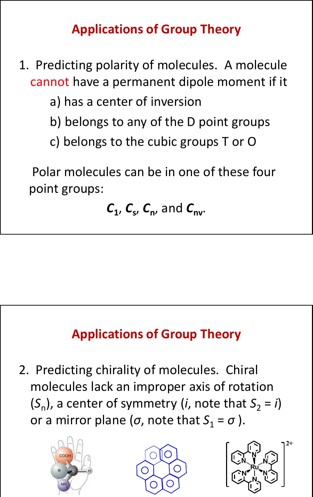
永久偶极矩是极矢量，必须沿某个在全部操作下保持不变的方向。C₁、Cs、Cn、Cnv 点群允许极性；所有 D 类、T/O/I 类以及含 i 的群都不允许永久偶极矩。允许只代表对称性不强迫其为零，实际数值仍可能因偶然抵消很小。
手性判定更简洁：只含 E 和正旋转 Cn 的点群可能手性，即常见 C₁、Cn、Dn。一旦存在 σ、i 或其他 Sn，镜像就能通过非真操作与原物重合，分子不具构型手性。[Co(en)₃]³⁺ 的理想构型为 D₃，可形成 Δ/Λ 对映体；而交错乙烷虽有扭转外观，却属 D₃d、含 i 和 S₆，不是手性分子。
“允许”与“实际”的区别
对称性只回答“是否被强制为零”。Cnv 允许偶极沿主轴，但若各键极性在数值上恰好抵消，实测偶极矩仍可能接近零。反过来，D 类点群的偶极矩被对称性严格禁止，无论键极性多大都必须为零。前者是可能、后者是必零，这个区别在选择题中经常被考察。
17. 分子振动：为什么需要对称性分析
分子光谱是判定分子结构与成键性质最直接的手段之一，而振动的数目和活性完全由对称性支配。红外光谱测的是分子吸收红外光后振动能级的跃迁，Raman 光谱测的是被分子散射后频率发生改变的光。两者都能给出振动频率，但选择定则不同，因此它们提供的信息互补。
离开群论，我们只知道一个分子有多少个振动，却无法回答更实际的问题：这些振动中哪些能在红外中看到？哪些只能在 Raman 中看到？为什么金属羰基配合物的 CO 伸缩区常常只有一两个峰，而理论上应该有更多？群论把这些问题变成查表和数字符的机械操作，不需要求解薛定谔方程。
振动分析为什么值得单独学
点群判定的其余应用大多只给出“是/否”的定性结论，而振动分析能直接与实验谱图对照。你算出 cis-ML₂(CO)₂ 应在 IR 中看到两个 CO 峰、Raman 中也是两个且频率重合，然后去测一张真实谱图核对——这正是群论在无机化学中最有说服力的用法。也正因如此，本讲把振动作为一个完整的方法流程来处理，而不是当作点群的一个小注脚。
18. 分子振动：3N 个自由度的分配
分子运动包括平移、转动和振动三类。N 个原子的分子共有 3N 个自由度（degrees of freedom），因为每个原子在三维空间有三个独立的位移方向。
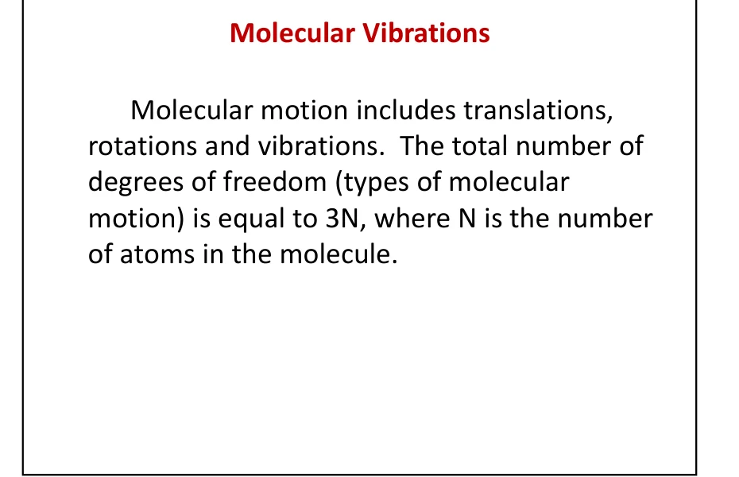
整体平移总是占 3 个自由度，对应分子沿 x、y、z 三个方向的移动。转动自由度取决于分子形状：非线性分子有三个转动轴，线性分子绕自身分子轴的转动不改变任何核的位置，所以只有两个独立的转动自由度。扣除平移和转动后剩下的是振动：
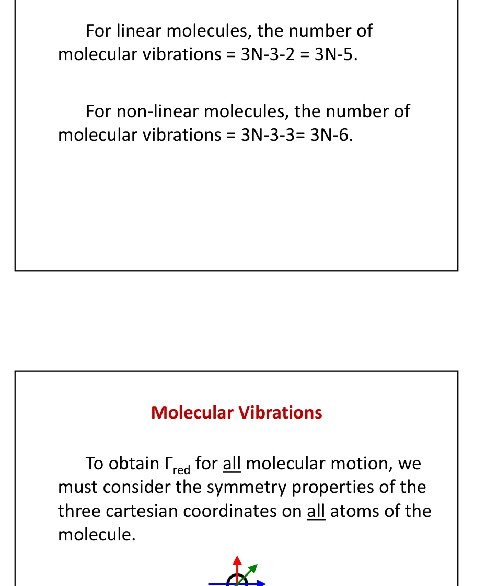
振动数是硬性约束，也是检查后续计算的第一个关卡。如果对 H₂O 用 Γ3N 约化并扣除平移转动后得到 4 个振动，那一定是在某一步出错了，不必继续往下算。
19. 第一步：如何构造 Γ3N
构造 Γ3N 的规则只有两条，但必须严格执行：
- 数留在原位的原子。
对每个对称操作，先看哪些原子没有被移走。被移到新位置的原子，它的三个笛卡尔坐标在新旧位置之间是“整体搬家”，对该操作矩阵的迹贡献 0。
- 对每个不移位的原子，写出它局部 x、y、z 的变换。
坐标轴保持方向 → +1；坐标轴反向 → −1；坐标轴被转到另一根轴上 → 0。把该原子三个分量的贡献相加，再对全部不移位原子求和，就是该操作下 Γ3N 的字符。
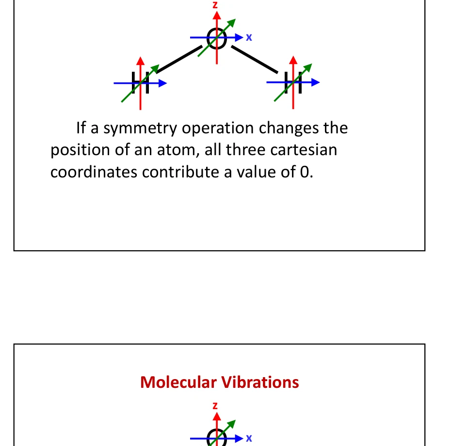
课件用 H₂O 逐页演示了这个过程，值得完整复述一遍。取 z 为 C₂ 主轴，分子位于 xz 平面，y 轴垂直于分子平面：
H₂O 的 Γ3N 逐类推进
E：三个原子（O、H、H）全部留在原位，每个贡献 3，合计 3×3 = 9。
C₂：轴穿过 O 并交换两个 H。两个 H 被移走，贡献 0。O 留在原位：z 轴（沿 C₂）保持 +1；x 轴被转 180° 指向反向 −1；y 轴同样反向 −1。O 的贡献为 +1−1−1 = −1。故字符为 −1。
σv(xz)：这是分子平面，三个原子全部留在原位。对每个原子，x 和 z 都在平面内保持不变（各 +1），y 被反射反向（−1）。每个原子贡献 1+1−1 = 1，三个原子合计 3。
σ′v(yz)：该面垂直分子平面并平分 H–O–H 角，只有 O 落在面上；两个 H 被交换，各贡献 0。对 O，y 和 z 在面内保持（各 +1），x 反向（−1），贡献 1+1−1 = 1。故字符为 1。
汇总得到 Γ3N = (9, −1, 3, 1)，共 9 个运动模式，对应 3N = 9。
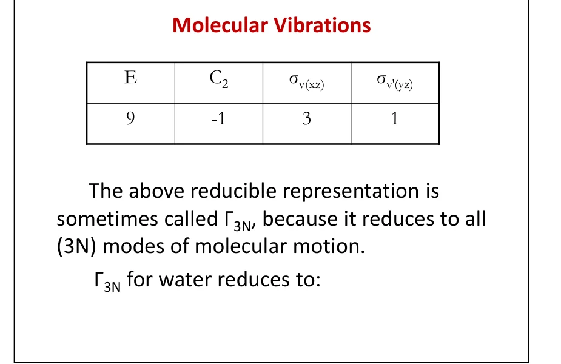
约化 Γ3N 得到：
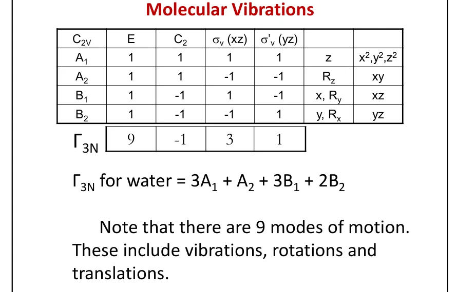
20. 第二步：扣除平移与转动
Γ3N 包含全部 3N 个运动，其中既有振动，也有整体平移和整体转动。扣除的依据是特征标表右侧的基函数：平移与 x、y、z 同对称，转动与 Rx、Ry、Rz 同对称。
从 Γ3N=3A₁+A₂+3B₁+2B₂ 中分别减去平移和转动：
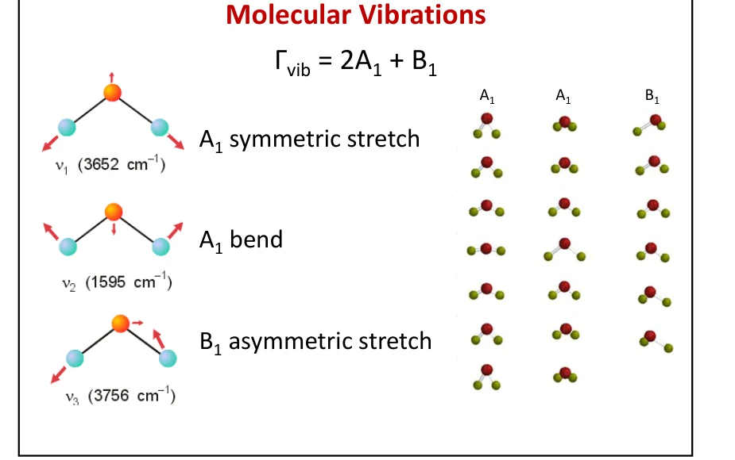
水的三个正常振动分别是：两个 A₁ 模式——对称伸缩（ν₁ ≈ 3652 cm⁻¹）与弯曲（ν₂ ≈ 1595 cm⁻¹），以及一个 B₁ 模式——反对称伸缩（ν₃ ≈ 3756 cm⁻¹）。两个 A₁ 模式对分子全部对称操作都保持不变；B₁ 模式对绕轴旋转和垂直于分子平面的反射是反对称的，直观上它的两个 H 沿相反方向运动。
为什么“模式数相同”不代表“频率相同”
对称性只告诉我们有多少个模式、分属哪个不可约表示，它不给频率数值。两个同属 A₁ 的模式可以是完全不同的运动（一个是伸缩、一个是弯曲），频率相差一倍以上。要得到具体频率仍需力常数与质量信息，即真实的振动分析计算。
21. 第三步：判定 IR 与 Raman 活性
振动能否被观察到，取决于它是否改变相应的分子性质：
振动必须改变分子的偶极矩。偶极矩矢量与笛卡尔坐标 x、y、z 具有相同的对称性，所以振动表示若含有 x、y 或 z 中至少一个的对称性，就是 IR 活性。
Raman 测量被分子散射的光。振动必须改变分子的极化率。极化率与二次函数 xy、yz、xz、x²、y²、z² 具有相同的对称性，所以振动表示若含有其中至少一个，就是 Raman 活性。
把 Γvib 中每个不可约表示，去特征标表的右侧栏查找。找到极矢量分量 → IR 活性；找到二次函数 → Raman 活性。
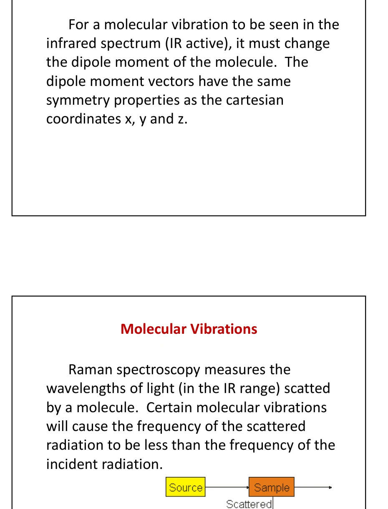
H₂O 的三个模式全部既 IR 又 Raman 活性
查 C₂v 特征标表：A₁ 行同时有 z 和 x²、y²、z²，所以两个 A₁ 模式（对称伸缩、弯曲）既 IR 活性又 Raman 活性。B₁ 行同时有 x 和 xz，所以 B₁ 模式（反对称伸缩）也既 IR 活性又 Raman 活性。
因此水的 IR 光谱应出现三个峰（3652、1595、3756 cm⁻¹），Raman 光谱也应出现对应的三个峰，而且两种光谱中同一模式的频率相同。这正是课件逐页强调的结论：三个 A₁/B₁ 模式在两个光谱中都能看到。
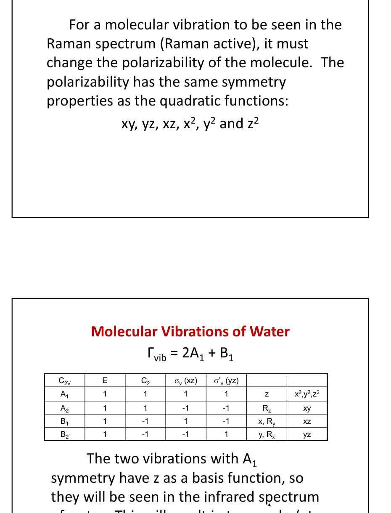
由此可以看出一种常见情形：在 C₂v 这类无反演中心的点群中，只有 A₂ 是纯 Raman 活性，其余表示都同时具备两种活性。这与后面要讲的互斥规则形成鲜明对比——互斥规则只在含反演中心的分子中成立。
22. 互斥规则：含反演中心分子的红外与 Raman
红外活性来自偶极矩（极矢量，反演下为奇，u）；Raman 活性来自极化率（二次函数，反演下为偶，g）。在含反演中心的分子中，任何不可约表示都只能是 g 或 u 之一，不可能同时是两者。因此：
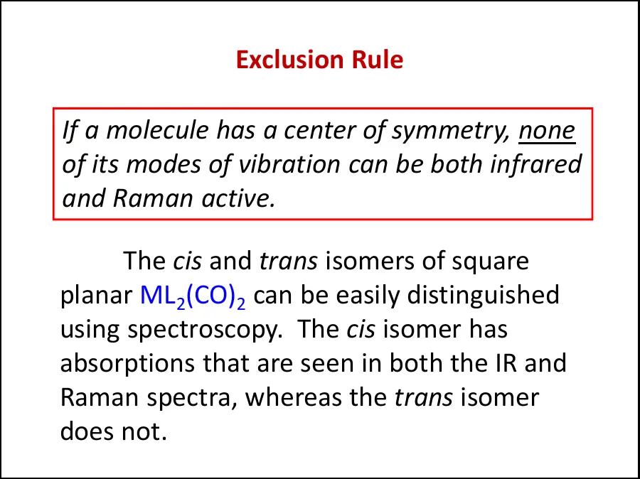
互斥规则的实用价值在于它是一条“有或无 i”的判定工具。若测得某分子的所有振动峰在 IR 与 Raman 中完全错开，说明它很可能有反演中心；若出现频率重合的峰，则分子一定没有反演中心。这比单纯数峰个数可靠得多。
为什么实验峰数常少于理论模式数
理论模式数由对称性确定，但实测光谱还受以下因素影响：简并模式（如二维 E 表示的两个振动频率相同）只给出一个峰；强度过弱的模式可能淹没在噪声中；不同模式的频率可能偶然重合；固体或溶液中的分子间相互作用会使选择定则有所放松；仪器分辨率与样品浓度也会影响可见峰数。因此“理论 6 个模式”不等于“光谱上一定看到 6 个峰”。
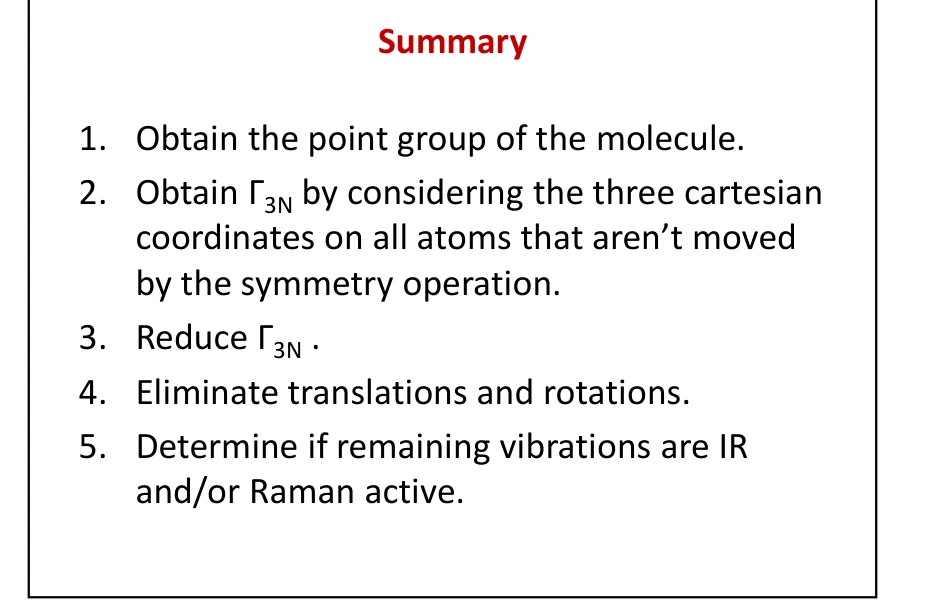
23. 完整流程总结与常见错误
- 确定分子的点群。
这一步错了，后面全部无效。先找最高阶 Cn，再查横向 C₂，最后看镜面、i 与 Sn。
- 求 Γ3N。
只考虑未被任何对称操作移位的原子上的三个笛卡尔坐标。移位的原子贡献 0。
- 约化 Γ3N。
用约化公式，注意每个因子里要有类权重。核对各表示个数之和是否等于 3N。
- 扣除平移和转动。
平移与 x、y、z 同对称；转动与 Rx、Ry、Rz 同对称。核对剩余个数是否等于 3N−6（或 3N−5）。
- 判定 IR 与 Raman 活性。
查特征标表右侧栏：含 x/y/z → IR 活性；含二次函数 → Raman 活性。含 i 的分子服从互斥规则。
振动部分最常见的六个错误
① 把“原子位置被移动”与“位移方向变号”混淆，误给移位原子记 −1 而不是 0。② 忘记某个原子虽然被操作移动，但它的三个坐标在整体上仍是原来的基矢量组合，因此贡献确实是 0。③ 约化时漏乘类权重（如 2C₃ 前的 2）。④ 扣除平移或转动时漏掉某一项，导致振动数不等于 3N−6。⑤ 把 Γ3N 直接当作 Γvib 去查活性。⑥ 看到“含反演中心”就说该分子没有红外光谱——正确的说法是同一模式不能兼具两种活性。
24. 应用一：cis/trans-ML₂(CO)₂ 的光谱区分
同一个化学式可以有不同几何构型，而它们的对称性不同，因此振动光谱不同。这是群论在无机化学中最实用的应用之一。
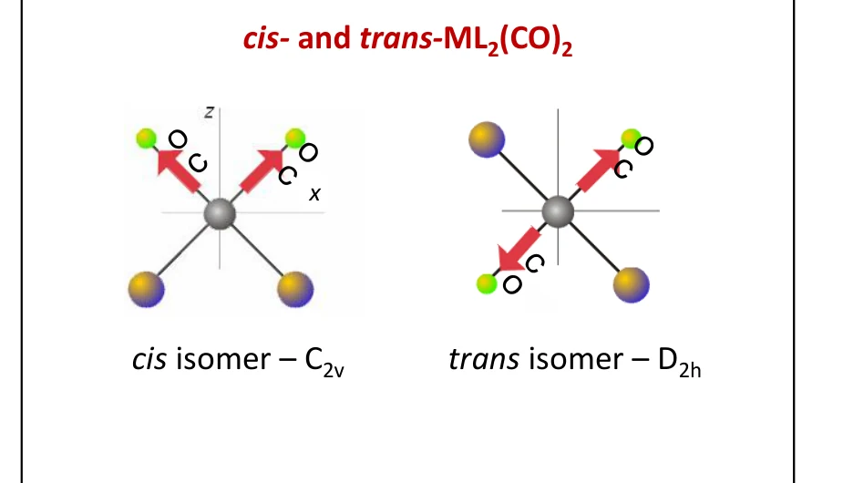
24.1 cis-ML₂(CO)₂：C₂v
cis 构型的点群是 C₂v。只取两根 C–O 伸缩坐标作为基函数（不必处理完整 3N 位移，因为关注的只是 C=O 伸缩区域）：E 保留两根，字符 2；C₂ 把两根交换，字符 0；σv(xz) 保留两根（分子平面），字符 2；σ′v(yz) 把两根交换，字符 0。因此
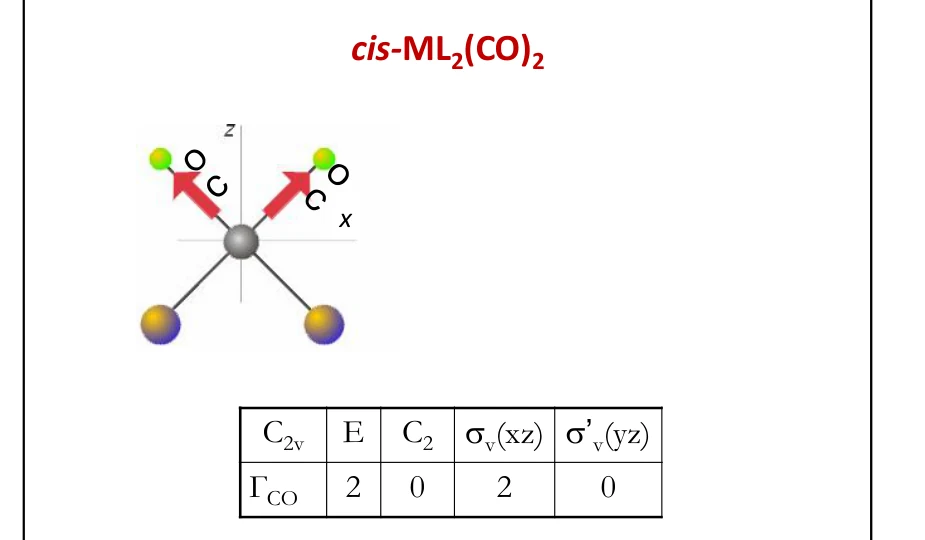
查 C₂v 表：A₁ 有 z 和 x²/y²/z²，B₁ 有 x 和 xz。因此 cis 的两个 CO 伸缩模式都同时是 IR 活性和 Raman 活性。实验上会在 IR 和 Raman 光谱中看到两组频率相同的吸收，这是 cis 构型的特征。
24.2 trans-ML₂(CO)₂：D₂h
trans 构型分子位于 xy 平面，点群为 D₂h，含有反演中心。D₂h 的操作为 E、C₂(z)、C₂(y)、C₂(x)、i、σ(xy)、σ(xz)、σ(yz)。对两根 C–O 键求字符：
约化得到：
这就是互斥规则的具体体现：trans 的对称伸缩只出现在 Raman 中，反对称伸缩只出现在 IR 中，两种光谱各有一个峰，且频率不同。
结论与推广
联合观察 IR 与 Raman 光谱即可区分 cis/trans 构型：cis 的 CO 伸缩峰在两种光谱中频率重合，trans 的则完全错开。需要注意的是，这里只处理了两根 C=O 伸缩坐标，因为金属羰基化合物的 CO 伸缩区（约 1800–2100 cm⁻¹）与其他振动在频率上分离良好，可以单独分析。同样的方法可推广到桥联羰基与终端羰基的区分，以及金属羰基簇的结构判断。
25. 应用二：从红外谱图读结构信息
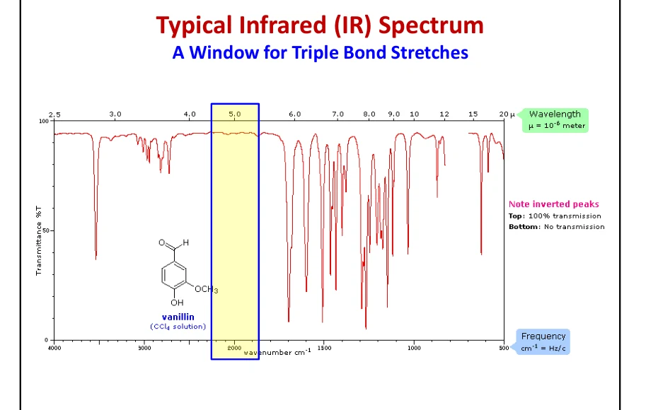
课件用香草醛的红外谱图说明红外光谱的读图习惯。横轴是波数（cm⁻¹，与波长成反比），纵轴是透射率（%T），因此吸收峰在图中表现为向下的峰。谱图上方标注的波长刻度（μm）与波数刻度互为倒数关系。
在无机化学中，最常被关注的是金属羰基化合物的 C=O 伸缩区（1800–2100 cm⁻¹）。这个区域相对孤立，峰形清晰，且峰的位置与金属的电子密度密切相关：金属上电子密度越高，反馈 π 键越强，C=O 键级越低，伸缩频率越低。因此 CO 伸缩频率可以作为金属中心电子环境的探针。
桥联羰基与终端羰基
桥联羰基（μ₂-CO）的 C=O 伸缩频率通常明显低于终端羰基，因为桥联时氧的孤对电子也参与配位，进一步削弱 C=O 键。以 [Fe₂(CO)₉] 为例，其红外光谱在终端羰基区与桥联羰基区各出现一组峰，可以直接读出分子中两种羰基的存在。这正是“先判对称性、再定活性”思路在真实结构解析中的应用。
26. 常见误区与考试速查
- 对称操作后不要求每个原子回到原编号，只要求同种原子互换后整体不可区分。
- E 不是 C₁ 轴；E 是恒等操作。C₁ 点群表示除 E 外没有非平凡操作。
- 主轴是阶数最高的 Cn；同一几何轴可同时执行 Cn 的不同幂。
- σh、σv、σd 必须相对主轴命名；σd 还要平分垂直 C₂ 轴间夹角。
- i 不是 C₂：反演使三个坐标全部变号，C₂ 保留轴向坐标。
- Sn 的顺序是“转 360°/n，再关于垂直平面反射”；S₁=σ，S₂=i。
- 有 Cn 后必须继续寻找 n 根垂直 C₂；这是区分 C 系与 D 系的关键。
- 有 σh 的 D 群写 Dnh；没有 σh但有 σd 才写 Dnd。
- 线性分子有 i 才是 D∞h；异核线性分子通常是 C∞v。
- 含 σ、i 或任何 Sn 的分子不具有构型手性；C₁、Cn、Dn 才可能手性。
- “对称性允许轨道混合”只是必要条件，还必须满足能量与空间重叠。
- 三维坐标表示的字符在 Cn 下为 1+2cos(360°/n)；这一条可用于快速验算。
- 特征标表中左侧 E 是二维表示，表头行 E 是恒等操作，两者同形不同义。
- 约化公式中每个因子都要乘类权重；字符平方和与维数平方和可用于自检。
- 振动数与点群无关，只由 N 和分子是否线性决定：非线性 3N−6，线性 3N−5。
- Γ3N 中把原子移到新位置的操作贡献 0；只有留在原位的原子才按坐标轴方向求迹。
- 不移位原子的坐标轴保持方向记 +1，反向记 −1，被转到另一根轴记 0。
- 必须扣除平移（与 x/y/z 同对称）和转动（与 Rx/Ry/Rz 同对称）后才能得到振动表示。
- IR 活性看 x/y/z，Raman 活性看二次函数；两者都可能则模式在两种光谱中同时出现。
- 有 i 时遵循互斥规则，但“互斥”指同一模式不能兼具两种活性，不是整个分子没有某种光谱。
- 不要把简并模式数直接当峰数；一组二维 E 模式通常给一个频率、包含两个简并振动。
- 实验峰数常少于理论模式数，原因包括简并、弱强度、偶然重合与选择定则放宽。
27. 本章作业与练习顺序
课件指定教材第 4 章习题 4.24–4.29，提交日期为 2026 年 10 月 16 日（星期五）。建议按四层训练，每层都以“点群判对”为前提：
自测可按由易到难排列，先做点群判定，再做完整振动分析：
H₂O、NH₃、BF₃、CO₂、HCN、XeF₄。每个写出主轴、垂直 C₂、σh/σv/σd、i、Sn 五栏，再给点群。
交错与重叠乙烷、苯、[Co(en)₃]³⁺、[ZrF₈]⁴⁻、CPh₄。重点练习 σd 与 Sn 的判断。
对上述每个分子写出 N 与 3N−6（或 3N−5），先确认模式总数。
H₂O（C₂v）与 NH₃（C₃v）：求 Γ3N、约化、扣平移转动、判 IR/Raman 活性。
cis/trans-ML₂(CO)₂：分别求 ΓCO，说明哪种异构体在 IR 与 Raman 中峰位重合。
解释为什么 BF₃ 不是 C₃h，为什么交错乙烷不是手性分子，为什么 H₂O 的 Γ3N 是 9 而不是 3。
NH₃ 的振动分析（自测参考）
NH₃ 属 C₃v，N=4，振动数 3×4−6=6。取 z 为 C₃ 主轴，三个 H 位于下方平面。Γ3N 逐类：E 保留全部 4 个原子，字符 4×3=12；C₃ 只保留 N（三个 H 循环交换），N 的 z 保持 +1，x、y 转入二维旋转且迹为 1+2cos120°=0，故字符 +1+0=1；σv 保留 N 和一个 H，两个原子各贡献 y、z 保持 +1、x 反向 −1，即每个贡献 1，合计 2。
因此 Γ3N=(12, 1, 2)（列序 E、2C₃、3σv）。用 C₃v 表（A₁、A₂、E）约化：设 Γ3N=aA₁+bA₂+cE，由 E 列得 a+b+2c=12，由 C₃ 列得 a+b−c=1，由 σv 列得 a−b=2。解得 a=3、b=1、c=4，即 Γ3N=3A₁+A₂+4E（共 3+1+8=12 ✓）。扣除平移（A₁+E，对应 z 与 (x,y)）和转动（A₂+E，对应 Rz 与 (Rx,Ry)）后：Γvib=2A₁+2E（2+4=6 ✓）。
查 C₃v 表：A₁ 含 z 和 x²+y²、z² → 既 IR 又 Raman 活性；E 含 (x,y) 与二次函数 → 既 IR 又 Raman 活性。因此 NH₃ 的 6 个振动全部既 IR 活性又 Raman 活性，共 4 个不同频率（两个 A₁ 各一个峰，两个 E 各给一个二重简并峰）。
28. 振动分析进阶：CO₂、SF₆ 与速算技巧
掌握水的例子后，应当能独立完成以下分子的分析。它们覆盖了不同的点群、不同的振动计数公式和不同的难点。
28.1 CO₂：线性分子的 3N−5 与互斥规则
CO₂ 属 D∞h，N=3，振动数 3×3−5=4。以 z 为分子轴。逐类求 Γ3N 字符：E 保留三个原子，3×3=9；C∞（绕分子轴转任意角）只保留中心的 C，其 z 保持 +1、x 与 y 转入二维旋转且迹为 0，故字符 1；σv 是包含分子轴的平面，三个原子全部留在面内，每个原子 y 与 z 保持、x 反向，各贡献 1，合计 3；i 把两端 O 互换（贡献 0），中心 C 三个坐标全部反向，贡献 −3；S∞ 与 C∞ 类似只保留 C，且含反射使 z 反向，迹为 −1；垂直 C₂ 只保留 C，其 z 反向 −1、x 与 y 组合迹为 0，故 −1。
Γ3N=(9, 1, 3, −3, −1, −1)。约化并扣除平移（Σu⁺+Πu）与转动（Πg）后得到 Γvib = Σg⁺ + Σu⁺ + Πu，共 4 个模式：对称伸缩 Σg⁺、反对称伸缩 Σu⁺、两个简并弯曲 Πu。
关键结论在于 g/u 之分：Σg⁺（对称伸缩）不含 x/y/z，只含二次函数，故仅 Raman 活性、红外非活性；Σu⁺ 与 Πu 含 x/y/z 分量，故仅红外活性、Raman 非活性。这就是为什么 CO₂ 的对称伸缩在红外中看不到——它虽然是完全对称的伸缩，但偶极矩在全程始终为零。这个例子清楚表明：互斥规则的直接后果是两种光谱互相补全，只有同时测量才能得到全部振动频率。
28.2 SF₆：高对称分子的简并模式
SF₆ 属 Oh，N=7，振动数 3×7−6=15。用同样方法可得 Γvib = A1g + Eg + 2T1u + T2g + T2u（1+2+6+3+3=15 ✓）。由于 Oh 含反演中心，g 表示只能 Raman 活性、u 表示只能红外活性：A1g、Eg、T2g 为 Raman 活性；2T1u 与 T2u 为红外活性。因此 SF₆ 的红外光谱只应看到两个吸收带，而 Raman 光谱看到三个带。这是一个极好的“理论模式数远多于实验峰数”的例证：15 个振动最后只给出 5 个不同的可观测频率，其余都因简并或非活性而不可见。
28.3 三维修迹速算：1+2cos θ
在 Cn 操作下，一个留在原位原子的三个坐标变换为：沿轴的 z 保持 +1；垂直于轴的 (x,y) 平面内旋转 θ=360°/n，该 2×2 块矩阵的迹为 2cos θ。所以每个不移位原子在 Cn 下的贡献可直接写作 1+2cos(360°/n)：
注意 C₃ 的贡献是 0 而不是 1：cos120°=−0.5，故 2cos120°=−1，加上 z 的 +1 得 0。用水分子验证：C₂ 下只有 O 不移位，贡献 −1，与逐轴分析结果一致；σv(xz) 下三个原子都不移位但这是反映不是旋转，需单独处理。这个公式只适用于纯旋转操作，σ、i、Sn 必须回到逐轴判断。
为什么 C₃ 下单个原子贡献是 0，而 C₃ᵥ 的 E 表示字符是 −1
这是最容易混淆的一对数字。单个原子的三个笛卡尔坐标在 C₃ 下：z 保持（+1），x、y 旋转 120°（迹 −1），总共 0。而特征标表中 E 表示的基函数只有 (x, y) 两个分量，不含 z，所以它的字符就是那个 −1。两个数字来自不同的基组，不能互相替代。判断“给这个原子记几分”时用 1+2cos θ；查“E 表示的字符是多少”时用表。
28.4 由振动光谱反推分子形状
振动分析不仅用于预测，也可用于反推构型。若实验测得某 AB₂ 型分子的红外吸收带与 Raman 峰完全错开，可推断该分子有反演中心，即线性构型（D∞h）而非弯曲构型（C₂v，如水）。反之，若两种光谱中出现频率重合的峰，则分子必无对称中心，弯曲构型的可能性大大增加。H₂O（C₂v，无 i）的三个振动在两个光谱中都出现；CO₂（D∞h，有 i）的对称伸缩只在 Raman 中、反对称伸缩与弯曲只在红外中——这一对分子的对比是理解互斥规则最好的实例。
这张表浓缩了本讲最核心的判断：有没有反演中心，决定了两种光谱是重合还是互补。没有 i 的 C₂v、C₃v 分子，振动往往在 IR 与 Raman 中同时可见；有 i 的 D∞h、Oh 分子，则严格分工。因此在实际结构鉴定中，同时测 IR 和 Raman 获得的信息远多于只测一种。